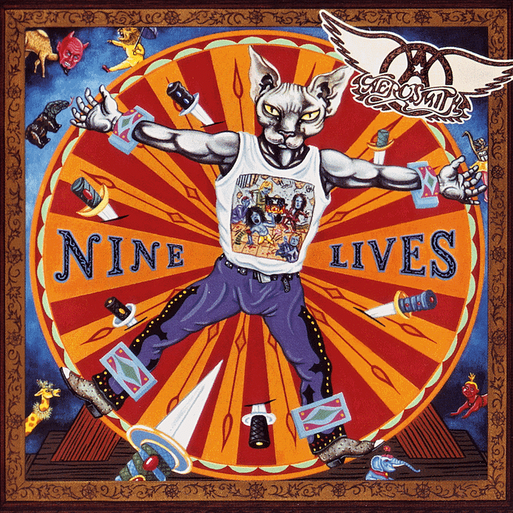

La banda estadounidense Aerosmith surge en New Hampshire en 1970, conformada por Joe Perry, guitarra solista; Steven Tyler, cantante; Tom Hamilton, bajista; Joey Kramer, batería, y Brad Whitford, en la segunda guitarra. El sonido de la banda era una mezcla entre Rock and Rol y Rhythm and Blues; para este entonces todos los miembros habían participado en diferentes bandas, y llevaban años en la escena musical por lo cual sabían cómo empezar a darse a conocer y atraer la atención del público.
Inicios
Los primeros años la Banda se dio a conocer tocando en diferentes eventos, no rechazaban una sola oportunidad, se presentaron en pequeños locales nocturnos y escuelas, entre otros, cualquier oferta era aceptada, puesto que la banda sabía que para darse a conocer tenía que estar presente no importaba lo poco que pagaran, eran vistos y escuchados por un público. Durante este periodo la Universidad de Boston era su lugar predilecto, se presentaban de forma gratuita cuando las salas de la institución estaban libres de compromisos, la banda era escuchada, sin embargo, no era tomada enserio, para este entonces solo era otra banda de rock.

Trayectoria de la Banda
Con el paso del tiempo la banda fue haciéndose de un nombre, esto impulso la carrera de la banda la cual fue puesta en contacto con Clive Davies, productor musical, el cual ayudo a que la banda consiguiera un contrato con el sello Columbia Records, bajo este lanzan en 1973 su primer álbum con el nombre de Aerosmith. Este álbum fue producido por Adrian Barber, en el están incluidas las canciones: Dream On, Write Me, Make It, One Way Street y Movin’ Out, entre otras; fue distribuido en las tiendas el mismo año y comprado por el ya numeroso grupo de fans de la banda.
El mayor éxito del álbum fue la canción Dream on, con la cual se abre el camino a la fama; el reconociendo de la banda permitió que estos tuvieran su primera gira oficial. Dos años después fue publicado el segundo álbum llamado Get Your Wings (1974), el álbum cuenta con 8 canciones entre estas Same Old Song and Dance, Woman of the World, Pandora’s Box, Lord of the Thighs y Train Kept A-Rollin’; el disco fue producido por Jack Douglas, con este consiguieron su primer Disco de Platino.
Un año después lanzan el álbum Draw the Line (1977), con el cual vuelven a estar en los tops musicales y consiguen un Disco Platino, para este entonces la banda llevaba un estilo de vida con grandes excesos como el uso de drogas y el alcohol, esto afectara en gran medida la unidad de la banda. Dos años más tarde sale Night in the Ruts (1979), poco tiempo después dejan la banda Joe Perry y Brad Whitford, como reemplazo entran Jimmy Crespo y Rick Dufay.
Cuatro años después publican Get a Grip (1993), álbum que les valió dos premios Grammy; el siguiente año lanzan Big Ones (1994), más tarde Nine Lives (1997). Un año después la banda participó como banda sonora de la película Armageddon interpretando el tema I Dont Want to Miss a Thing, canción con la cual llegan a los primeros puestos de los tops musicales, esta canción marcó la historia de Aerosmith. En el nuevo milenio la banda ha publicado Just Push Play (2001),Honkin’ on Bobo (2004) Rockin’ the Joint(2005) Livin’ On the Edge (2011) y Music from Another Dimension!(2012).